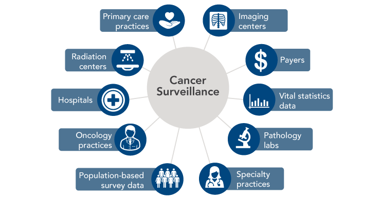

Objective 5: Facilitate data sharing and integration to improve care, enhance surveillance, and advance research.
Over the past 25 years, the U.S. cancer mortality rate has decreased by 23 percent, representing more than 1.7 million cancer deaths averted.[1] These improvements stem from investments in cancer surveillance and research that have led to development of new approaches and wider use of proven strategies to prevent, detect, diagnose, and treat cancers.[1] However, there is remarkable need—and tremendous opportunity—to reduce the population burden of cancer even further by developing better ways to prevent and treat the hundreds of diseases that make up cancer and ensuring that knowledge is effectively applied.
Unprecedented amounts of data about people at risk of cancer and cancer patients are being collected in medical records, as part of research studies, and by individuals themselves. In the past, health data remained wherever they were collected and generally were used in limited ways to serve the specific needs of whoever collected them. These silos represent a significant missed opportunity, one recently highlighted by the Cancer Moonshot (see Cancer Moonshot). Connected health technologies have an important role to play by facilitating linkages of systems and data sets and creating tools that enable researchers, clinicians, and patients to use data in meaningful ways. Creation of a national infrastructure to support sharing and processing of cancer data—a National Cancer Data Ecosystem—also is identified as a priority by the Cancer Moonshot Blue Ribbon Panel.[2] To accomplish this, technical and logistical challenges to data integration must be overcome, and the cancer community must foster a culture of collaboration that encourages data sharing and free exchange of ideas. Care also must be taken to ensure that federal, state, and organizational policies appropriately balance data sharing for research with individuals’ privacy and security. The Health Insurance Portability and Accountability Act (HIPAA) has received extensive attention in this regard. Concerns raised by the Institute of Medicine,[3] C-Change,[4] and other stakeholders spurred recent modifications to HIPAA intended to facilitate research.[5-7] Continued attentiveness is needed to ensure that HIPAA and other policies are accurately interpreted and applied and do not unnecessarily deter research.
Cancer Moonshot
During his State of the Union address in January 2016, President Obama announced the establishment of a new Cancer Moonshot. The initiative—led by Vice President Joseph Biden—aims to accelerate progress in cancer prevention, diagnosis, treatment, and care to make a decade of progress in five years. At the Cancer Moonshot Summit in June 2016, more than 35 new actions and partnerships to advance Cancer Moonshot goals were announced. These include the National Cancer Institute’s (NCI) Genomic Data Commons (see GDC in Box 3) and the Applied Proteogenomics Organizational Learning and Outcomes (APOLLO) Network, a partnership between NCI, the Department of Defense, and the Department of Veterans Affairs that is using state-of-the-art research methods in proteogenomics to advance understanding of the molecular underpinnings of cancer.
Sources: The White House Office of the Press Secretary. Fact Sheet: Investing in the National Cancer Moonshot [Press Release]. Washington (DC): the White House; 2016 Feb 1. Available from: https://www.whitehouse.gov/the-press-office/2016/02/01/fact-sheet-investing-national-cancer-moonshot; National Cancer Institute. NCI-related activities announced at the Moonshot summit [Internet]. Bethesda (MD): NCI; 2016 Jun 29 [cited 2016 Jul 8]. Available from: http://www.cancer.gov/research/key-initiatives/moonshot-cancer-initiative/milestones/nci-activities
Action Item 5.1: Use learning healthcare systems to support continuous improvement in care across the cancer continuum.
Widespread adoption of health IT and digital capture of health data create opportunities to develop learning healthcare systems that continuously and iteratively gather and analyze data and use results to transform subsequent care delivery (Figure 8). Although learning healthcare systems integrate data from clinical trials and other research studies, they are set apart by their capacity to conduct powerful new types of observational studies by using data captured during real-world clinical encounters.
Figure 8
Learning Healthcare System
![This figure shows the cycle of a learning healthcare system. Steps in the circle include:
Collect patient data from clinical encounters.
Aggregate and analyze data.
Use evidence to inform changes in care delivery.
Evaluate outcomes.
Adjust practice as needed for continual improvement.
The circle also includes an arrow that illustrates gathering data from external sources, such as clinical trials, observational studies, patient-reported outcomes, surveillance databases, and population-based surveys. There also is an arrow emerging from the circle that illustrates dissemination of results.](img/Figures/Final/Figure8.png "Figure 8. Learning Healthcare System")
Sources: Abernethy AP, Etheredge LM, Ganz PA, Wallace P, German RR, Neti C, et al. Rapid-learning system for cancer care. J Clin Oncol. 2010;28(27):4268-74. Available from: http://www.ncbi.nlm.nih.gov/pubmed/20585094; Greene SM, Reid RJ, Larson EB. Implementing the learning health system: from concept to action. Ann Intern Med. 2012;157(3):207-10. Available from: https://www.ncbi.nlm.nih.gov/pubmed/22868839
The vision of a continuously learning healthcare system and the path for achieving this vision are described in detail in the 2012 Institute of Medicine (IOM) report Best Care at Lower Cost: The Path to Continuously Learning Health Care in America.[8] The importance of a learning healthcare system for oncology is discussed in the 2013 IOM report Delivering High-Quality Cancer Care: Charting a New Course for a System in Crisis.[9] Learning healthcare systems could enhance oncology care and research in several ways.[10] With the emergence of precision medicine, physicians would benefit from clinical decision support tools that help them identify and weigh all available options. Learning healthcare systems provide opportunities to learn from the experiences of a broad array of cancer patients, including those from populations—such as older adults and racial/ethnic minorities—that are underrepresented in cancer clinical trials.[11,12] They also facilitate comparative effectiveness research and ongoing monitoring of drug safety and efficacy, which is particularly important for drugs receiving accelerated approval from the Food and Drug Administration.
The President’s Cancer Panel reiterates the call by the IOM for a learning healthcare system for cancer.[9] The Panel also supports efforts by the American Society of Clinical Oncology and others to create learning healthcare systems that will improve cancer prevention, detection, treatment, and survivorship (see Kaiser Permanente’s Learning Healthcare System and CancerLinQ: A Learning Healthcare System for Oncology). Oncology practices and healthcare systems should participate in or implement learning healthcare systems and harness their power to improve cancer care across the continuum. The Office of the National Coordinator for Health Information Technology (ONC) can help address technical barriers by promoting interoperability, as well as development and adoption of common standards (see Objective 1). The Panel is troubled by reports that information blocking (see Information Blocking in Objective 1) has undermined some efforts to create learning healthcare systems and urges all stakeholders to adopt policies and practices that promote the flow of information to support clinical care and learning.
Kaiser Permanente’s Learning Healthcare System
In the mid-2000s, Kaiser Permanente developed and implemented efforts to become a learning organization, capable of continuous improvements in quality, safety, service, and efficiency. Data from Kaiser’s integrated EHR system, HealthConnect, play a key role. Among other features, HealthConnect captures quality metrics data and informs clinicians of their concordance with clinical practice guidelines. It also features advanced clinical decision support for oncology that includes 230 standardized protocols for major adult cancers, as well as alerts when patients are eligible for clinical trials.
Studies have shown that Kaiser’s commitment to using technology to support care and learning has paid dividends for cancer prevention and care. Rates of colorectal and breast cancer screenings increased following adoption of HealthConnect in Kaiser’s Hawaii region. In addition, compared with other colorectal cancer patients in California, patients treated within the Kaiser system were more likely to receive evidence-based care and had higher five-year survival rates. In sharp contrast with the markedly higher colorectal cancer mortality rates observed among African Americans nationwide, racial and ethnic disparities in colorectal cancer survival were absent among Kaiser patients.
View Sources
Institute of Medicine. Delivering high-quality cancer care: charting a new course for a system in crisis. Levit L, Balogh E, Nass S, Ganz P, editors. Washington (DC): The National Academies Press; 2013 Sep 10. Available from: https://www.nap.edu/18359; Kaiser Permanente. How Kaiser Permanente became a continuous learning organization [Press Release]. Oakland (CA): Kaiser Permanente; 2011 Nov 17. Available from: https://share.kaiserpermanente.org/article/how-kaiser-permanente-became-a-continuous-learning-organization/; Kemp K. Research insights: using evidence to build a learning health care system. Washington (DC): Academy Health; 2012. Available from: http://www.academyhealth.org/publications/2012-08/research-insights-using-evidence-build-learning-health-care-system; Shah NR. Supporting population health through integrated healthcare systems, patient engagement, and transparency. Presented at: President's Cancer Panel meeting; 2015 Mar 26; San Francisco, CA; Chen C, Garrido T, Chock D, Okawa G, Liang L. The Kaiser Permanente Electronic Health Record: transforming and streamlining modalities of care. Health Aff (Millwood). 2009;28(2):323-33. Available from: http://www.ncbi.nlm.nih.gov/pubmed/19275987; Rhoads KF, Patel MI, Ma Y, Schmidt LA. How do integrated health care systems address racial and ethnic disparities in colon cancer? J Clin Oncol. 2015;33(8):854-60. Available from: http://www.ncbi.nlm.nih.gov/pubmed/25624437; Schilling L, Dearing JW, Staley P, Harvey P, Fahey L, Kuruppu F. Kaiser Permanente's performance improvement system, Part 4: Creating a learning organization. Jt Comm J Qual Patient Saf. 2011;37(12):532-43. Available from: http://www.ncbi.nlm.nih.gov/pubmed/22235538
CancerLinQ: A Learning Healthcare System for Oncology
The American Society of Clinical Oncology has developed a learning healthcare system for oncology called the Cancer Learning Intelligence Network for Quality, or CancerLinQ. CancerLinQ gathers data through automated feeds from EHRs and practice management systems of participating oncology practices, so practice staff do not need to manually extract data for submission. The primary goals of CancerLinQ are to:
- Provide real-time quality feedback to practices to foster a culture of self-examination and improvement.
- Provide personalized insights to help physicians choose the right therapy at the right time for each patient, based on published treatment guidelines and other knowledge bases.
- Uncover patterns that can improve care using analytical tools.
CancerLinQ was launched in 2016 and, to date, more than 58 practices ranging from small private practices to cancer centers have joined. CancerLinQ also has formed a collaboration with Cancer Informatics for Cancer Centers, a consortia of senior cancer informatics leaders from the 70 NCI-funded cancer centers and other cancer centers around the world.
View Sources
Sledge GW, Hudis CA, Swain SM, Yu PM, Mann JT, Hauser RS, et al. ASCO's approach to a learning health care system in oncology. J Oncol Pract. 2013;9(3):145-8. Available from: http://www.ncbi.nlm.nih.gov/pubmed/23942494; American Society of Clinical Oncology. CancerLinQ health information technology (HIT) platform [Internet]. Alexandria (VA): ASCO; [cited 2015 Aug 28]. Available from: http://www.instituteforquality.org/cancerlinq; American Society of Clinical Oncology. CancerLinQ completes agreements with thirty-six "vanguard" practices. Alexandria (VA): ASCO; 2016 Apr 21. Available from: https://www.asco.org/latest-news-releases/cancerlinq-completes-agreements-over-thirty-five-vanguard-practices; Schilsky RL, Miller RS. Creating a learning health care system in oncology. In: Hesse BW, Ahern D, Beckjord E, editors. Oncology informatics: using health information technology to improve processes and outcomes in cancer. San Diego (CA): Elsevier; 2016; American Society of Clinical Oncology. ASCO's CancerLinQ™ extends its reach—58 oncology practices, 750,000 patient records, 1,000 providers under contract, new partnership launched with the nation's leading cancer informatics association [News Release]. Alexandria (VA): ASCO; 2016 Jun 5. Available from: https://www.asco.org/about-asco/press-center/news-releases/asco%E2%80%99s-cancerlinq%E2%84%A2-extends-its-reach-%E2%80%93-58-oncology-practices
Action Item 5.2: Use health information technologies to enhance cancer surveillance.
Cancer registries provide invaluable data that are used to inform cancer prevention and control efforts, as well as to support a broad variety of research activities. Healthcare providers in each state are required to report all cancer cases, treatments, and outcomes to state cancer registries. National cancer statistics are generated by combining data collected by the Centers for Disease Control and Prevention (CDC) National Program of Cancer Registries (NPCR) and the NCI Surveillance, Epidemiology, and End Results (SEER) Program.
Modern cancer surveillance faces several challenges that could be addressed through connected health. Cancer surveillance data traditionally have been submitted to central registries by hospitals and, more recently, pathology laboratories. However, the number of patients being diagnosed and treated in non-hospital settings is growing, resulting in underreporting of incidence for certain cancers and incomplete information on treatments administered.[13-16] Many patients also receive therapies in multiple locations—sometimes in different states—over long periods of time, which complicates reporting. Cancer surveillance could be strengthened if health IT were used to create and enhance linkages across state registries, as well as between registries and all providers, laboratories, and institutions involved in diagnosing and treating cancers. Ideally, surveillance data also could be supplemented with information from payers, government data systems for vital statistics, population-based surveys, and patients themselves (Figure 9).
One way to enhance linkages between registries and providers would be to promote automatic reporting of data from EHRs to central cancer registries. CDC, in collaboration with other stakeholders, has developed and published guidance for EHR-based data submission to cancer registries by ambulatory healthcare providers, a group that traditionally has underreported to cancer registries.[17] The ONC 2015 Health IT Certification Criteria require EHRs to be capable of compiling cancer case information for transmission to central cancer registries[18] and identify the CDC guidance as the standard for this transmission. However, implementation of processes that enable automatic transmission of cancer data from EHRs to central registries has been slow. Barriers to more widespread implementation include lack of cancer-reporting functionality in many EHRs; EHR workflows that are not conducive to entering data elements needed by cancer registries; limited resources within central cancer registries for receiving, validating, and processing EHR data; and issues with quality and completeness of data transmitted from EHRs.
Currently, some of the EHR-derived data submitted to central registries are in unstructured formats, requiring manual extraction and interpretation that are both time-consuming and prone to errors. Non-standardized data from laboratories for cancer biomarkers and diagnostic test results pose a particular challenge for registries. CDC and the College of American Pathologists have collaborated to develop protocols and tools for pathologists to collect cancer pathology and biomarker data in standardized, coded templates.[19] However, pathologists and laboratories have been slow to implement these standards within their laboratory information systems.
The President's Cancer Panel encourages national and state registry representatives, health IT developers, and federal agencies to collaborate in using connected health tools to improve cancer surveillance. Moreover, innovations in tool development should be encouraged. ONC should continue its work with registry stakeholders to ensure that the health information technologies used by all providers and institutions involved in treating and diagnosing cancer are capable of automatically transmitting high-quality data in a consistent format to central cancer registries. Federal agencies supporting surveillance should ensure that the states’ central registries have the resources and technical support necessary to receive, validate, and process automated data transmissions from a variety of sources. As technical standards emerge for cancer-related data, structured data elements should be incorporated into registry submissions whenever appropriate. Federal agencies should continue to work with laboratories, pathologists, and laboratory information system vendors to implement standardized collection and reporting of cancer pathology and biomarker data using the College of American Pathologists protocols and tools. Registry stakeholders also should continue to collaborate with computer scientists to pursue other strategies, such as natural language processing (see Natural Language Processing), that facilitate extraction of meaningful information from unstructured data. This will be particularly important in an era of precision medicine in which registries seek to integrate more sophisticated molecular and genomic information about patients and their tumors to provide insights into how these factors influence prognosis and treatment responses.
Figure 9
Sources of Cancer Surveillance Data
Source: Penberthy LT, Winn DM, Scott SM. Cancer surveillance informatics. In: Hesse BW, Ahern D, Beckjord E, editors. Oncology informatics: using health information technology to improve processes and outcomes in cancer. San Diego (CA): Elsevier; 2016.
Natural Language Processing
Most information in health records is entered as free text. Free text may be an effective way for members of an individual’s care team to communicate, but it is difficult to search, summarize, and analyze for secondary purposes, such as research or quality improvement. Natural language processing, or NLP, is any computer-based algorithm that handles, augments, or transforms natural language—such as a doctor’s notes—so that it can be represented for computation. NLP is one strategy being explored to make data more usable for cancer registries and other applications.
Source: Yim WW, Yetisgen M, Harris WP, Kwan SW. Natural language processing in oncology: a review. JAMA Oncol. 2016;2(6):797-804. Available from: http://www.ncbi.nlm.nih.gov/pubmed/27124593
Action Item 5.3: Integrate data from various sources to create knowledge networks for cancer research.
Researchers, clinicians, and patients have accumulated vast amounts of cancer-related data. Far greater insights would be possible if data from various sources were integrated and made broadly available to researchers. A number of recommendations in the Cancer Moonshot Blue Ribbon Panel report focused on the challenges in and opportunities for new discoveries and insights that could emerge from greater data sharing.[2] Examples could include combining similar data sets collected at different institutions and/or through different research projects to generate larger data sets for analysis. Multiple initiatives are under way to facilitate this type of data sharing among researchers (see GDC and Oncology Research Information Exchange Network [ORIEN] in Box 3). Rich data sets also could be created by linking large databases housing different types of data, such as clinical data from EHRs, population-based health survey results, cancer surveillance data, behavioral data, environmental data, and payer claims. Integration of these complementary data can facilitate more meaningful and comprehensive analyses of outcomes, patterns of care, cost-effectiveness, social determinants of health, health services, and other factors. However, the barriers to conducting these linkages can be daunting. Among other challenges, data from different sources may be covered by different policies and regulations (e.g., HIPAA, informed consent, state laws), negotiation of Data Use Agreements can be time-consuming, and matching of individual records often is difficult. Despite these barriers, integration of data is being achieved in some cases (see Integrated Cancer Information and Surveillance System [ICISS] in Box 3).
Connected health also has created opportunities to enhance biomedical research through increased public participation in research. Individuals increasingly have electronic access to their medical records and also are collecting their own data using mobile and wearable devices. In addition to using these data to support their own health goals, individuals should be empowered to share their data with researchers, with appropriate safeguards for sensitive data. The Sync for Science pilot program recently launched by ONC and the National Institutes of Health (NIH) will facilitate this by promoting development of apps that link to individuals’ electronic health information and facilitate donation of data to the Precision Medicine Initiative.[20] A public-facing portal that enables patients and healthy individuals to contribute their data for scientific research is a flagship feature of the Cancer Data Ecosystem envisioned by the Cancer Moonshot Blue Ribbon Panel.[2] Patient-driven knowledge networks, such as PatientsLikeMe (see Tools Supporting Consumer Engagement in Objective 2 ),[21] also are making contributions to research. In addition, there are opportunities for researchers to incorporate person-generated data into their studies (see Using Person-Generated Data in Cancer Research).
Biomedical research has revealed the vast complexity of the hundreds of diseases that collectively are called cancer. Numerous genetic, environmental, and lifestyle factors determine cancer risk, as well as response to treatment. Research is needed to identify ways to reduce the population burden of cancer by tailoring risk reduction and treatment strategies to patients’ circumstances. This will be accomplished faster and more effectively if data are shared openly and all stakeholders collaborate. There has been progress in this area, but there is more to be done. The President’s Cancer Panel urges continued public-private collaboration to facilitate the efficient and effective flow of health information for cancer research. Members of the public also should be engaged throughout the research process.[22]
Box 3
Initiatives Facilitating Data Sharing and Integration
-
Genomic Data Commons
The Cancer Moonshot, along with the Precision Medicine Initiative, helped launch the NCI Genomic Data Commons (GDC), a database that promotes sharing of genomic and clinical data among researchers to advance precision medicine for cancer. The GDC provides a resource for depositing, standardizing, harmonizing, and sharing cancer genomic and clinical data. The GDC also provides tools for finding genomic and clinical data sets, as well as a growing palette of tools for sharing, analyzing, and visualizing cancer genomic and phenotypic data. The GDC has data from The Cancer Genome Atlas, TARGET (Therapeutically Applicable Research to Generate Effective Treatments), and other genomic data sets. As part of a recently announced partnership, Foundation Medicine, Inc., will provide the GDC with molecular and genomic profiles of 18,000 patients with various cancers generated by the company’s proprietary genomic profiling assay. Research institutions are encouraged to submit data via a portal to enable sharing and analysis with other data sets to build on an expandable knowledge network of clinical and genomic data for use by cancer research programs. In addition to the GDC, NCI has three Cloud Pilots designed to take data from the GDC and make those data available in a commercial cloud computing infrastructure.
Source: National Cancer Institute. Genomic Data Commons [Internet]. Bethesda (MD): NCI; [cited 2016 Oct 4]. Available from: https://gdc.cancer.gov/
-
Oncology Research Information Exchange Network
Numerous cancer centers and private companies have formed a research partnership called the Oncology Research Information Exchange Network (ORIEN) to collaborate on precision cancer medicine efforts and to accelerate the development of targeted treatments. ORIEN uses a common protocol to prospectively collect and share clinical, molecular, and epidemiological data on more than 100,000 consenting patients. These data can be used to efficiently match patients, based on molecular profiles, to clinical trials for targeted therapies. ORIEN’s shared data repository also can facilitate cross-institutional collaborations, such as biomarker discovery projects, and serve as a rapid-learning environment for researchers to analyze data and share findings among member organizations.
Source: Oncology Research Information Exchange Network. Home page [Internet]. Tampa (FL): ORIEN; [cited 2016 Sep 8]. Available from: http://oriencancer.org/
-
Integrated Cancer Information and Surveillance System
The Integrated Cancer Information and Surveillance System (ICISS), a component of University of North Carolina Lineberger Comprehensive Cancer Center’s Outcomes Research Program, uses a “team science” approach to build data systems and methods to support researchers in leveraging big data to enhance population health in North Carolina. ICISS links and manages large data sets from multiple state sources, including cancer registries, private and public payers, and geospatial resources. Researchers, with the help of innovative analytical tools and expert technical support, can use these data to describe clinical, social, and environmental factors that influence health outcomes among the state’s cancer population. This big data resource is particularly useful in answering questions regarding health inequities. For example, a study analyzing ICISS data found that black women were 25 percent less likely to receive trastuzumab, a key adjuvant treatment for HER2-positive breast cancer, within one year of diagnosis than were white women.
View Sources
University of North Carolina at Chapel Hill, Lineberger Comprehensive Cancer Center. Integrated Cancer Information and Surveillance System [Internet]. Chapel Hill (NC): UNC Lineberger [cited 2016 Oct 3]. Available from: https://iciss.unc.edu/; Meyer AM, Olshan AF, Green L, Meyer A, Wheeler SB, Basch E, et al. Big data for population-based cancer research: the Integrated Cancer Information and Surveillance System. N C Med J. 2014;75(4):265-9. Available from: http://www.ncbi.nlm.nih.gov/pubmed/25046092; Reeder-Hayes K, Peacock Hinton S, Meng K, Carey LA, Dusetzina SB. Disparities in use of human epidermal growth hormone receptor 2-targeted therapy for early-stage breast cancer. J Clin Oncol. 2016;34(17):2003-9. Available from: http://www.ncbi.nlm.nih.gov/pubmed/27069085
Genomic Data Commons
The Cancer Moonshot, along with the Precision Medicine Initiative, helped launch the NCI Genomic Data Commons (GDC), a database that promotes sharing of genomic and clinical data among researchers to advance precision medicine for cancer. The GDC provides a resource for depositing, standardizing, harmonizing, and sharing cancer genomic and clinical data. The GDC also provides tools for finding genomic and clinical data sets, as well as a growing palette of tools for sharing, analyzing, and visualizing cancer genomic and phenotypic data. The GDC has data from The Cancer Genome Atlas, TARGET (Therapeutically Applicable Research to Generate Effective Treatments), and other genomic data sets. As part of a recently announced partnership, Foundation Medicine, Inc., will provide the GDC with molecular and genomic profiles of 18,000 patients with various cancers generated by the company’s proprietary genomic profiling assay. Research institutions are encouraged to submit data via a portal to enable sharing and analysis with other data sets to build on an expandable knowledge network of clinical and genomic data for use by cancer research programs. In addition to the GDC, NCI has three Cloud Pilots designed to take data from the GDC and make those data available in a commercial cloud computing infrastructure.
Source: National Cancer Institute. Genomic Data Commons [Internet]. Bethesda (MD): NCI; [cited 2016 Oct 4]. Available from: https://gdc.cancer.gov/
Oncology Research Information Exchange Network
Numerous cancer centers and private companies have formed a research partnership called the Oncology Research Information Exchange Network (ORIEN) to collaborate on precision cancer medicine efforts and to accelerate the development of targeted treatments. ORIEN uses a common protocol to prospectively collect and share clinical, molecular, and epidemiological data on more than 100,000 consenting patients. These data can be used to efficiently match patients, based on molecular profiles, to clinical trials for targeted therapies. ORIEN’s shared data repository also can facilitate cross-institutional collaborations, such as biomarker discovery projects, and serve as a rapid-learning environment for researchers to analyze data and share findings among member organizations.
Source: Oncology Research Information Exchange Network. Home page [Internet]. Tampa (FL): ORIEN; [cited 2016 Sep 8]. Available from: http://oriencancer.org/
Integrated Cancer Information and Surveillance System
The Integrated Cancer Information and Surveillance System (ICISS), a component of University of North Carolina Lineberger Comprehensive Cancer Center’s Outcomes Research Program, uses a “team science” approach to build data systems and methods to support researchers in leveraging big data to enhance population health in North Carolina. ICISS links and manages large data sets from multiple state sources, including cancer registries, private and public payers, and geospatial resources. Researchers, with the help of innovative analytical tools and expert technical support, can use these data to describe clinical, social, and environmental factors that influence health outcomes among the state’s cancer population. This big data resource is particularly useful in answering questions regarding health inequities. For example, a study analyzing ICISS data found that black women were 25 percent less likely to receive trastuzumab, a key adjuvant treatment for HER2-positive breast cancer, within one year of diagnosis than were white women.
Sources: University of North Carolina at Chapel Hill, Lineberger Comprehensive Cancer Center. Integrated Cancer Information and Surveillance System [Internet]. Chapel Hill (NC): UNC Lineberger [cited 2016 Oct 3]. Available from: https://iciss.unc.edu/; Meyer AM, Olshan AF, Green L, Meyer A, Wheeler SB, Basch E, et al. Big data for population-based cancer research: the Integrated Cancer Information and Surveillance System. N C Med J. 2014;75(4):265-9. Available from: http://www.ncbi.nlm.nih.gov/pubmed/25046092; Reeder-Hayes K, Peacock Hinton S, Meng K, Carey LA, Dusetzina SB. Disparities in use of human epidermal growth hormone receptor 2-targeted therapy for early-stage breast cancer. J Clin Oncol. 2016;34(17):2003-9. Available from: http://www.ncbi.nlm.nih.gov/pubmed/27069085
Using Person-Generated Data in Cancer Research
The emergence of smartphones and a variety of wearable technologies (e.g., Fitbit) has created new ways to collect person-generated data for cancer research. These tools can help gain a more comprehensive picture of the biological, social, behavioral, and environmental factors that influence health, as well as the impact of disease and treatment on people’s everyday lives.
Mobile and wearable technologies offer a number of advantages for research. Data can be collected more frequently—sometimes even continuously—and are gathered as people live their everyday lives, rather than in controlled clinical or laboratory environments. Remote data collection also means fewer trips to the research site, which should result in cost savings and make it easier for people to participate. Mobile devices also can be used to prompt participants to take medications, record information, or carry out research-related tasks.
Smartphones and wearables already have been incorporated into a number of research studies relevant to cancer, including:
- Breast Cancer Weight Loss (BWEL) study: Researchers at Dana-Farber Cancer Institute have partnered with Fitbit to find out whether losing weight can reduce the likelihood of recurrence among overweight or obese women recently diagnosed with early-stage breast cancer. The 3,200 participants from across the United States and Canada all will receive health education about breast cancer, as well as Fitbit devices donated by the company. These devices will enable measurement of activity, heart rate, body weight, body mass index, lean mass, and body fat. Some women also will have a health coach who can access their Fitbit data and will communicate with them by phone to help them reach their goals.
- Share the Journey: Sage Bionetworks, a nonprofit research organization, has used Apple’s ResearchKit (see Apple ResearchKit and CareKit in Objective 2 ) to create an app that enables breast cancer survivors to record and track their health and symptoms in real time on their iPhones. They also can share their data with researchers, who plan to use the data to enhance understanding of the symptoms that occur after breast cancer treatment, determine why these symptoms vary over time, and help identify ways to improve them.
- Keeping Pace: With funding from the Health Data Exploration Project, a New York University research laboratory is using personal sensor data to investigate how the built environment influences exercise behaviors over time. Participants share their RunKeeper data, along with basic demographic information, with the researchers. The use of personal sensors in mobile devices avoids the recall bias that is a drawback of using surveys for this type of research.
There also may be opportunities to learn from the vast quantities of data being captured by individuals’ personal devices. The Health Data Exploration project found that individuals have a strong interest in contributing their personal health data and researchers are enthusiastic about using it, but additional work is needed related to privacy and data ownership, informed consent, the validity of personal health data collected by consumer devices, and the lack of standardization among devices. Consumers’ role in data generation is paving the way for new models that regard personal health data as a natural resource and provide individuals with more control over how their data are accessed and used.
The research community should continue to identify ways to use connected health tools to gather person-generated data for cancer-related studies, as well as generate data that will help elucidate the value of sensors and mobile devices for clinical care (see Part 3 ). Connected health tools could be particularly useful for implementing the Cancer Moonshot Blue Ribbon Panel recommendation to accelerate research for monitoring and managing patient-reported symptoms. The NIH Toolbox, which is available as an iPad app, is one resource that can help researchers assess functional changes in patients as part of research studies.
View Sources
Pai A. Dana Farber, Fitbit to study the impact of weight loss on breast cancer recurrence. mobihealthnews [Internet]. 2016 Apr 27 [cited 2016 Jul 27]. Available from: http://mobihealthnews.com/content/dana-farber-fitbit-study-impact-weight-loss-breast-cancer-recurrence; Rabin RC. Putting breast cancer on a diet. The New York Times [Internet]. 2016 Jun 27 [cited 2016 Jul 27]. Available from: http://nyti.ms/28Zw5Uk; Dana-Farber Cancer Institute. Dana-Farber and Fitbit partner to test if weight loss can prevent breast cancer recurrence. Boston (MA): Dana-Farber Cancer Institute; 2016 Apr 27. Available from: http://www.dana-farber.org/Newsroom/News-Releases/dana-farber-cancer-institute-and-fitbit-partner-to-test-if-weight-loss-prevent-breast-cancer-recurrence.aspx; Dana-Farber Cancer Institute. App developed in collaboration with Dana-Farber researchers allows breast cancer survivors to share symptoms instantly [News Release]. Boston (MA): Dana-Farber Cancer Institute; 2016 Mar 9. Available from: http://www.dana-farber.org/Newsroom/News-Releases/app-developed-in-collaboration-with-dana-farber-researchers-allows-breast-cancer-survivors-to-share-symptoms-instantly.aspx; Share the Journey. Home page [Internet]. Seattle (WA): Sage Bionetworks; [cited 2016 Jul 28]. Available from: http://sharethejourneyapp.org/; Dorsey ER, Yvonne Chan YF, McConnell MV, Shaw SY, Trister AD, Friend SH. The use of smartphones for health research. Acad Med. 2016 [Epub 2016 Apr 26]. Available from: http://www.ncbi.nlm.nih.gov/pubmed/27119325; Health Data Exploration Project. Personal data for the public good: new opportunities to enrich understanding of individual and population health. Princeton (NJ): Robert Wood Johnson Foundation; 2014 Mar. Available from: http://www.rwjf.org/content/dam/farm/reports/reports/2014/rwjf411080; Bietz MJ, Bloss CS, Calvert S, Godino JG, Gregory J, Claffey MP, et al. Opportunities and challenges in the use of personal health data for health research. J Am Med Inform Assoc. 2016;23(e1):e42-8. Available from: http://www.ncbi.nlm.nih.gov/pubmed/26335984; Evans BJ. Barbarians at the gate: consumer-driven health data commons and the transformation of citizen science. Am J Law Med. 2016;42(4). Available from: http://papers.ssrn.com/sol3/papers.cfm?abstract_id=2750347; Cancer Moonshot Blue Ribbon Panel. Cancer Moonshot Blue Ribbon Panel Report 2016. Bethesda (MD): National Cancer Institute; 2016 Oct 17. Available from: https://www.cancer.gov/research/key-initiatives/moonshot-cancer-initiative/blue-ribbon-panel; NIH Toolbox [Internet]. National Institutes of Health and Northwestern University [cited 2016 Sep 28]. Available from: http://www.nihtoolbox.org
References
- American Cancer Society. Cancer death rate continues steady drop [Press Release]. Atlanta (GA): ACS; 2016 Jan 7. Available from: http://pressroom.cancer.org/Cancer-Stats2016
- Cancer Moonshot Blue Ribbon Panel. Cancer Moonshot Blue Ribbon Panel Report 2016. Bethesda (MD): National Cancer Institute; 2016 Oct 17. Available from: https://www.cancer.gov/research/key-initiatives/moonshot-cancer-initiative/blue-ribbon-panel
- Institute of Medicine. Beyond the HIPAA Privacy Rule: enhancing privacy, improving health through research. Nass SJ, Levit LA, Gostin LO, editors. Washington (DC): The National Academies Press; 2009. Available from: https://www.nap.edu/12458
- Patlak M, Smith AP, Cox KA, Shah P, Young RC. The costs of HIPAA: to patients, to progress, and to the nation's health. Washington (DC): C-Change; 2012. Available from: http://c-changetogether.org/Websites/cchange/images/HIPAA/C-Change_HIPAA_Cost_Study_web_version.pdf
- Savage L, Brooks A. The real HIPAA supports interoperability [Internet]. Washington (DC): Office of the National Coordinator for Health Information Technology; 2016 Feb 4 [cited 2016 Feb 16]. Available from: https://www.healthit.gov/buzz-blog/electronic-health-and-medical-records/interoperability-electronic-health-and-medical-records/the-real-hipaa-supports-interoperability/
- U.S. Department of Health and Human Services. Research [Internet]. Washington (DC): DHHS; [updated 2013 Jun 5; cited 2016 Sep 14]. Available from: http://www.hhs.gov/hipaa/for-professionals/special-topics/research/index.html
- U.S. Department of Health and Human Services Office for Civil Rights. Modifications to the HIPAA Privacy, Security, Enforcement, and Breach Notification Rules under the Health Information Technology for Economic and Clinical Health Act and the Genetic Information Nondiscrimination Act; other modifications to the HIPAA Rules. Fed Regist. 2013 Jan 25;78(17):5566-702. Available from: https://www.federalregister.gov/documents/2013/01/25/2013-01073/modifications-to-the-hipaa-privacy-security-enforcement-and-breach-notification-rules-under-the
- Institute of Medicine. Best care at lower cost: the path to continuously learning health care in America. Smith M, Saunders R, Stuckhardt L, McGinnis JM, editors. Washington (DC): The National Academies Press; 2012. Available from: http://nap.edu/13444
- Institute of Medicine. Delivering high-quality cancer care: charting a new course for a system in crisis. Levit L, Balogh E, Nass S, Ganz P, editors. Washington (DC): The National Academies Press; 2013 Sep 10. Available from: https://www.nap.edu/18359
- Abernethy AP, Etheredge LM, Ganz PA, Wallace P, German RR, Neti C, et al. Rapid-learning system for cancer care. J Clin Oncol. 2010;28(27):4268-74. Available from: http://www.ncbi.nlm.nih.gov/pubmed/20585094
- Lewis JH, Kilgore ML, Goldman DP, Trimble EL, Kaplan R, Montello MJ, et al. Participation of patients 65 years of age or older in cancer clinical trials. J Clin Oncol. 2003;21(7):1383-9. Available from: http://www.ncbi.nlm.nih.gov/pubmed/12663731
- Ford JG, Howerton MW, Lai GY, Gary TL, Bolen S, Gibbons MC, et al. Barriers to recruiting underrepresented populations to cancer clinical trials: a systematic review. Cancer. 2008;112(2):228-42. Available from: http://www.ncbi.nlm.nih.gov/pubmed/18008363
- Penberthy L, McClish D, Peace S, Gray L, Martin J, Overton S, et al. Hematologic malignancies: an opportunity to fill a gap in cancer surveillance. Cancer Causes Control. 2012;23(8):1253-64. Available from: http://www.ncbi.nlm.nih.gov/pubmed/22674222
- Penberthy LT, McClish D, Agovino P. Impact of automated data collection from urology offices: improving incidence and treatment reporting in urologic cancers. J Registry Manag. 2010;37(4):141-7. Available from: http://www.ncbi.nlm.nih.gov/pubmed/21688743
- Cockburn M, Swetter SM, Peng D, Keegan TH, Deapen D, Clarke CA. Melanoma underreporting: why does it happen, how big is the problem, and how do we fix it? J Am Acad Dermatol. 2008;59(6):1081-5. Available from: http://www.ncbi.nlm.nih.gov/pubmed/19022107
- Harris RB, Koch SM, Newton C, Silvis NG, Curiel-Lewandroski C, Giancola J, et al. Underreporting of melanoma in Arizona and strategies for increasing reporting: a public health partnership approach. Public Health Rep. 2015;130(6):737-44. Available from: http://www.ncbi.nlm.nih.gov/pubmed/26556947
- National Center for Chronic Disease Prevention and Health Promotion, Division of Cancer Prevention and Control. Implementation guide for ambulatory healthcare provider reporting to central cancer registries: HL7 clinical document architecture (CDA). Atlanta (GA): Centers for Disease Control and Prevention; 2014 Mar. Available from: http://www.cdc.gov/phin/resources/guides/documents/implementation_guide_for_
ambulatory_healthcare_provider_reporting_to_central_cancer_registries_march_2014.pdf - U.S. Department of Health and Human Services. 2015 Edition Health Information Technology (Health IT) Certification Criteria, 2015 Edition Base Electronic Health Record (EHR) Definition, and ONC Health IT Certification Program Modifications. Fed Regist. 2015 Oct 16;80(200):62602-759. Available from: https://www.federalregister.gov/articles/2015/10/16/2015-25597/2015-edition-health-information-technology-health-it-certification-criteria-2015-edition-base
- College of American Pathologists. Cancer protocols [Internet]. Northfield (IL): CAP; [cited 2016 Sep 11]. Available from: http://www.cap.org/web/oracle/webcenter/portalapp/pagehierarchy/cancer_protocols.jspx
- White J, Briggs J, Mandel J. NIH and ONC launch the Sync for Science (S4S) pilot: enabling individual health data access and donation. Health IT Buzz [Internet]. 2016 Mar 21 [cited 2016 Aug 4]. Available from: https://www.healthit.gov/buzz-blog/health-innovation/nih-and-onc-launch-the-sync-for-science-pilot/
- PatientsLikeMe. Home page [Internet]. Cambridge (MA): PatientsLikeMe; [cited 2016 Feb 29]. Available from: https://www.patientslikeme.com/
- FasterCures. Patients count [Internet]. Washington (DC): Milken Institute; [cited 2016 Aug 12]. Available from: http://www.fastercures.org/programs/patients-count/